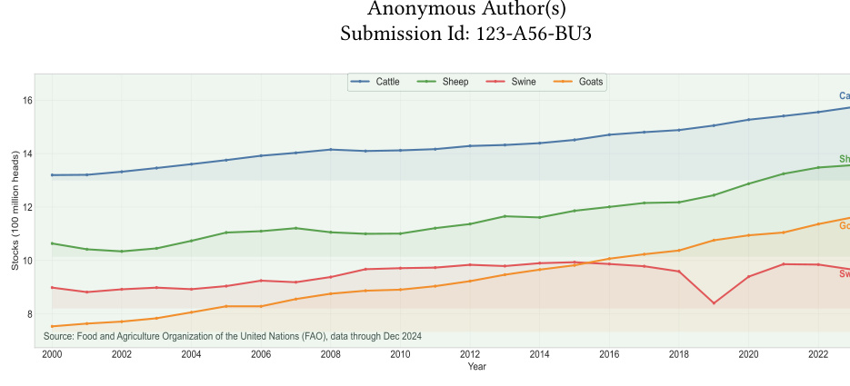
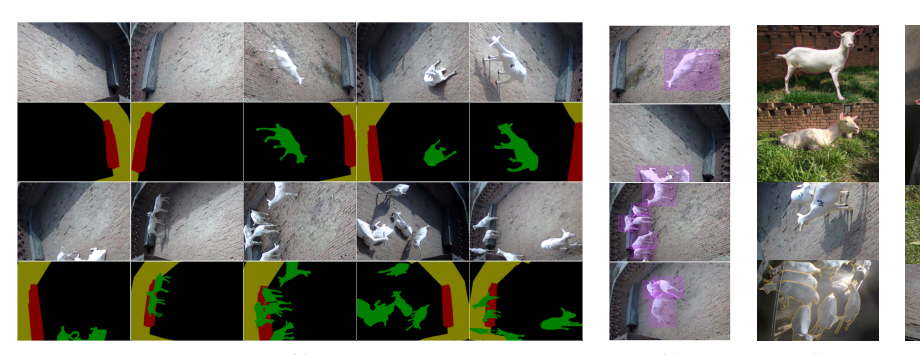
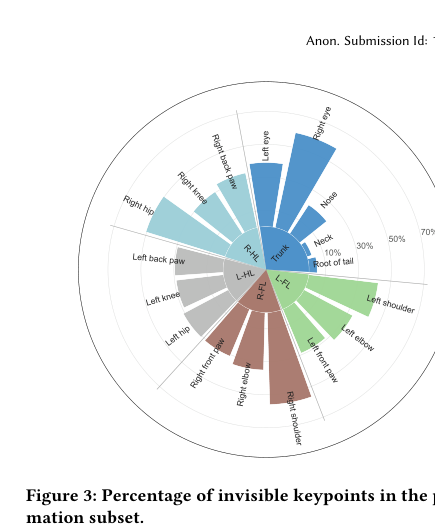
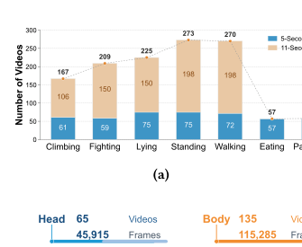
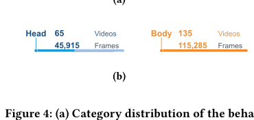
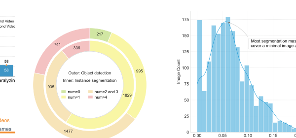

数据集概览
DGV-Suite 以任务特定子集形式组织，在统一基准框架下覆盖奶山羊视觉理解中的核心任务。
摘要
DGV-Suite 针对现有奶山羊数据集规模小、任务孤立、采集条件受限等问题，构建了一个面向真实牧场环境的大规模视觉基准套件。数据集包含 32,007 张图像和 1,459 段视频，覆盖光照变化、遮挡、个体交互等复杂条件。
该基准支持目标检测、实例分割、语义分割、目标跟踪、姿态估计、行为识别、个体识别和图像生成 8 类任务，并报告了 6 个监督任务上的代表性 baseline，验证了其挑战性与应用价值。
数据集与标注协议
页面内容依据论文中的数据采集、标注流程、子集统计与 benchmark protocol 进行整理。
采集环境
数据采自中国西北地区大型奶山羊科研教学牧场，包含半开放式室内羊舍与室外活动区。场内饲养 159 只泌乳期萨能奶山羊，并有 10 只黑山羊在相同管理条件下生活。
采集设备
室内外部署多摄像头系统，包括 YW7100HR-SC9 红外网络摄像头和 DS-IPC-B12-I/POE 摄像头；视频为 1080p、25 fps，并辅以 Canon EOS 60D 采集的高分辨率静态图像。
标注协议
检测采用 LabelImg/PASCAL VOC，实例分割采用 LabelMe/COCO，语义分割采用 EasyData，跟踪采用 ImageLabel/VOT；姿态估计使用 17 个关键点，行为识别包含 7 类行为，个体识别按身份文件夹组织。
评测协议
6 个监督任务统一采用 7:1:2 的 train/val/test 划分。检测、实例分割和姿态估计使用 AP/AP50/AP75；语义分割使用 mIoU/mDice/mPA；行为识别使用 mAP/mAcc/F1；跟踪使用 EAO/Success/Speed。
DGV-Suite 子集结构（依据论文统计）
DGV-Suite/
├── detection/ # 3,430 images, 8,216 instances
├── instance_segmentation/ # 3,100 images, 5,572 instances
├── semantic_segmentation/ # 1,829 images, pixel-level masks
├── tracking/ # 65 head videos + 135 body videos
├── pose_estimation/ # 5,268 images, 17 keypoints
├── behavior_recognition/ # 1,259 videos, 7 classes
├── identification/ # 15,380 images, 159 goats
└── image_generation/ # 3,000 images论文图示与数据特征
以下图示基于论文中的关键可视化结果整理，适合作为项目页中的图像样例与统计摘要。






Benchmark Results
以下表格对应论文 Table 2，保留了六个监督任务上的代表性 baseline 与官方指标。
官方 protocol
所有结果均在各任务测试集上报告，验证集用于模型选择与 early stopping。检测/分割/姿态使用 AP 系列指标，语义分割使用 mIoU、mDice、mPA，行为识别使用 mAP、mAcc、F1，跟踪使用 EAO、Success、Speed。
结果观察
YOLOv11 在目标检测上最佳，YOLOv12-Seg 在实例分割上最佳，DeepLabV3+ 在语义分割上表现最优，ELSlowFast-LSTM 在行为识别上取得最高 mAP，ODTrack 在跟踪上获得最高 EAO。
目标检测
| 方法 | 骨干网络 | AP | AP50 | AP75 |
|---|---|---|---|---|
| Faster R-CNN | r50 | 0.5555 | 0.9845 | 0.6819 |
| Cascade R-CNN | r50 | 0.5930 | 0.9765 | 0.6689 |
| FCOS | r50 | 0.5160 | 0.9430 | 0.5090 |
| YOLOv7 | E-ELAN | 0.5994 | 0.9878 | 0.7936 |
| YOLOv11 | C2PSA | 0.6346 | 0.9826 | 0.8023 |
实例分割
| 方法 | 骨干网络 | AP | AP50 | AP75 |
|---|---|---|---|---|
| Mask R-CNN | r50 | 0.7913 | 0.9775 | 0.9525 |
| YOLACT | r50 | 0.8107 | 0.9688 | 0.9288 |
| SOLOv2 | r50 | 0.8707 | 0.9899 | 0.9792 |
| YOLOv8-Seg | CSPDarknet | 0.6112 | 0.7991 | 0.6708 |
| YOLOv12-Seg | R-ELAN | 0.8930 | 0.9940 | 0.9884 |
姿态估计
| 方法 | 骨干网络 | AP | AP50 | AP75 |
|---|---|---|---|---|
| HRNet | w32 | 0.9139 | 0.9766 | 0.9454 |
| PVT v2 | b2 | 0.9055 | 0.9750 | 0.9521 |
| RTMPose | CSPNeXt | 0.9145 | 0.9764 | 0.9448 |
| GRMPose | CSPNeXt | 0.9117 | 0.9765 | 0.9550 |
语义分割
| 方法 | 骨干网络 | mIoU | mDice | mPA |
|---|---|---|---|---|
| U-Net | r50 | 0.7462 | 0.7983 | 0.7262 |
| DeepLabV3+ | r50 | 0.7750 | 0.8692 | 0.8618 |
| SegFormer | MiT | 0.7698 | 0.8638 | 0.8597 |
| SegMAN | SegMAN Encoder | 0.7670 | 0.8616 | 0.8578 |
行为识别
| 方法 | 骨干网络 | mAP | mAcc | F1 |
|---|---|---|---|---|
| I3D | r50 | 0.7690 | 0.7019 | 0.6890 |
| SlowFast | r50 | 0.7103 | 0.6935 | 0.6829 |
| TimeSformer | ViT | 0.7710 | 0.7026 | 0.6890 |
| VideoMAE v2 | ViT | 0.8091 | 0.7294 | 0.7256 |
| ELSlowFast-LSTM | r50 | 0.8195 | 0.7195 | 0.7012 |
目标跟踪
| 方法 | 骨干网络 | EAO | Success | 速度 |
|---|---|---|---|---|
| SiamRPN++ | r50 | 0.2489 | 0.6401 | 33fps |
| STARK | r50 | 0.2681 | 0.8037 | 25fps |
| SeqTrack | ViT | 0.2732 | 0.7945 | 21fps |
| ODTrack | ViT | 0.2893 | 0.8102 | 23fps |
注：论文表 2 注明，下划线模型在 4060Ti 上训练，其余模型在 A40 GPU 上训练。
引用
BibTeX
@inproceedings{anonymous2026dgvsuite,
title = {DGV-Suite: A Benchmark Suite of Task-Specific Subsets for Dairy Goat Vision},
author = {Anonymous Author(s)},
booktitle = {Anonymous Submission},
note = {Submission Id: 123-A56-BU3},
year = {2026}
}